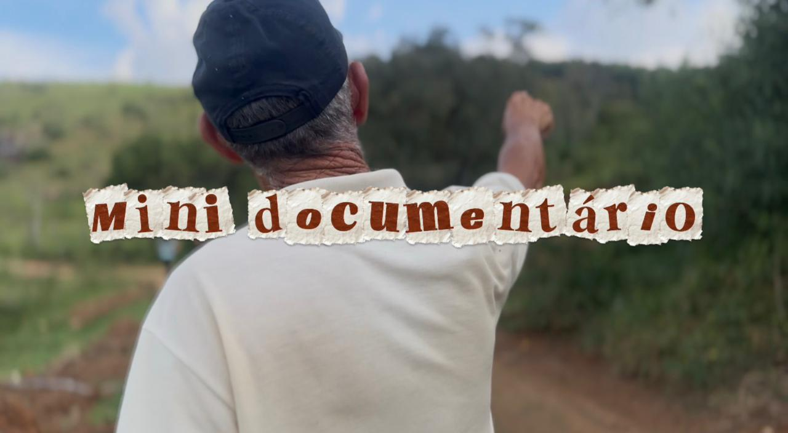
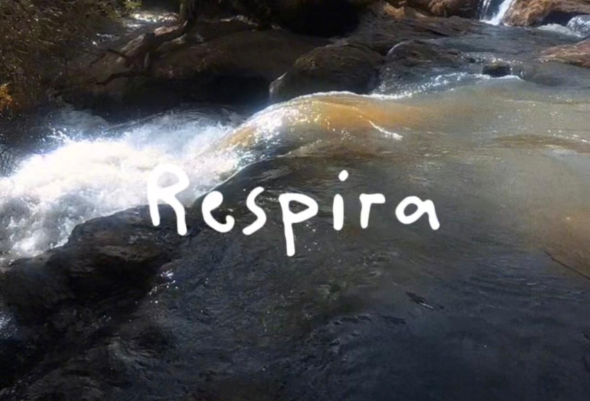

Projetos
Produções audiovisuais que exploram identidade, sociedade, mídia e comportamento humano.

A Segunda Alma
Inspirado no conto "O Espelho", de Machado de Assis, o curta acompanha Jacobina, uma jovem influenciadora que se perde na fama e na própria imagem.

Mini Documentário
O contraste entre cidade e campo é utilizado para discutir criticamente os impactos humanos sobre o meio ambiente e as relações de exploração.

Respira
Videoarte que explora a relação entre natureza e ação humana por meio de contrastes visuais e sonoros. Imagens orgânicas interrompidas por glitches e resíduos, simbolizando a interferência humana no meio ambiente.